SOCCER TEAM
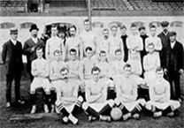 A football team is the collective name given to a group of players selected together in the various team sports known as football.Such teams could be selected to play in a match against an opposingteam, to represent a football club, group, state or nation, an All-star team or even selected as a hypothetical team (such as a Dream Team or Team of the Century) and never play an actual match. There are several varieties of football, notably Association football, Gridiron football, Australian rules football, Gaelic football, rugby league, and rugby union. The number of players selected for each team within these varieties and their associated codes can vary substantially. In some, use of the word "team" is sometimes limited to those who play on the field in a match and does not always include other players who may take part as replacements or emergency players. "Football squad" may be used to be inclusiv e of these support and r eserve players. The term football club is the most commonly used for a sports club which is an organised or incorporated body with a president, committee and a set of rules responsible for ensuring the continued playing existence of one or more teams which are selected for regular competition play (and which may participate in several different divisions or leagues).The oldest football clubs date back to the early 19th century. The words team and club are sometimes used interchangeably by supporters, although they typically refer to the team within the club playing in the highest division or competition.

PLAYERS
The players of any team are the people who are seen by the public. It is the accumulation of everyone's efforts within the setup and, without the contributions of them, there would be nothing to see and ultimately no team.
 Goalkeeper
Goalkeeper
A goalkeeper in any team is the person that makes saves. On Wikipedia, the goalkeepers are the users that go through article for deletion discussions, looking for articles to save from deletion. Although they cannot save everything, they are able to keep content on the encyclopedia that, without their efforts, would be deleted.
 Defenders
Defenders
The defenders of the project work slowly to create the best articles that Wikipedia has to offer. They create many featured articles and good articles but have to spend time researching topics, so ultimately they work on a relatively small number of pages – but the value that they add to them is incredible.
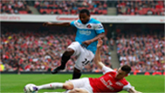 Midfielders
The midfielders of any team are the people that hold the whole team together . Their work may help bridge the gap between the stubs and featured articles or may be gnomish tasks, such as copy editing or wikifying. Without their efforts, Wikipedia would be a much less reliable source.
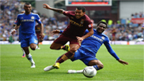 Attackers
The attackers of Wikipedia are the users that create many articles . They may not be the best articles Wikipedia has to offer, but their contributions mean that Wikipedia covers most topics that the reader would wish to read about. Examples of their work include creating stub articles
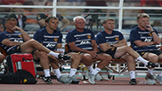 Backroom staff
As with all successful teams, the backroom staff hold the team together and offer advice and encouragement to help the team play to the best of their ability. Backroom staff don't get credited by the fans, but, without their efforts, the team would not be as successful as they are.
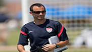 Directors
The directors of Wikipedia are the people that have to make the tough decisions right at the top level. They include the arbitration committee and Jimbo Wales. They often have to make tough decisions which the players and other staff don't like – but they have the long term interests of the project at heart.
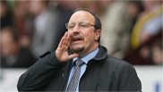 Managers
Managers co-ordinate the day to day running of the team.These users contribute to noticeboards such as Wikipedia:Administrators' noticeboard, Wikipedia : Administrator intervention against vandalism, Wikipedia:Requests for page protection and CAT:CSD. The managers also participate in policy discussions in an attempt to increase the efficiency of the team.
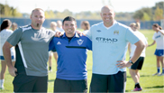 Coaching staff
These users analyse the work of the players in an attempt to make the final product better. They contribute to XfD discussions and other process related discussions to help improve what the fans see.
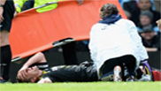 First aid staff
If someone has an injury or is feeling down in the community, the first aid staff are the users that help these users overcome their problems. In many ways, they keep the morale up.
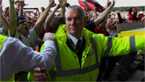 Gate staff
These users protect what is coming into the project. They include the new page patrollers. They act as a gate to keep Wikipedia's content reliable . Without these users, many pages would appear on the project that should not be there.
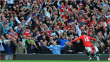 Fans
As with any team, the fans are the users that come to watch the team play – they are our readers. Without their fans, the role of any player or backroom staff would be pointless. The fans are the most important part of any team. It is important that standards do not drop, or the fans will begin to leave – without that, we have no project.
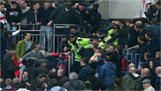 Hooligans
Hooligans in any environment cause disruption. These users are not wanted on the project. They vandalise the project through IP's or throwaway accounts. Generally speaking, the gate staff and matchday stewards keep these users at bay.
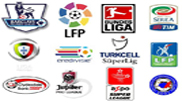 League
The English wikipedia is in a domestic league with its same language counterparts. These include Wiktionary, Simple English Wikipedia and Wikinews. On the world stage, the English Wikipedia is on the same level as all the other language Wikipedias. Its main rivals include the German, French and Spanish Wikipedias. All the teams have one goal – to be the best that they possibly can be with the resources they have available．